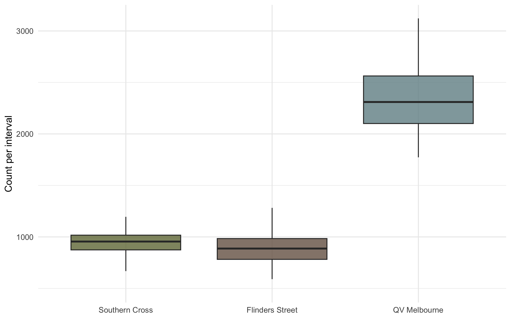
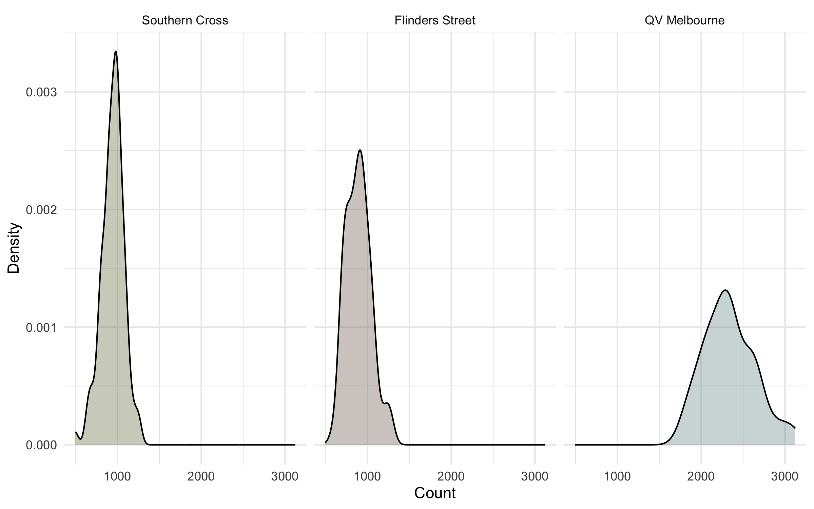
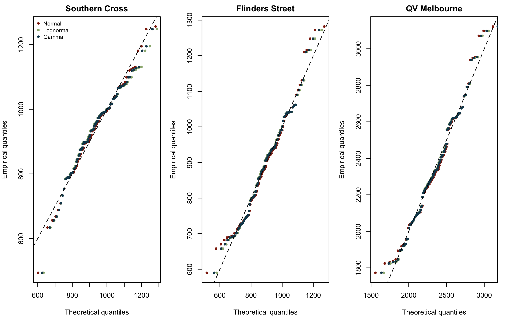
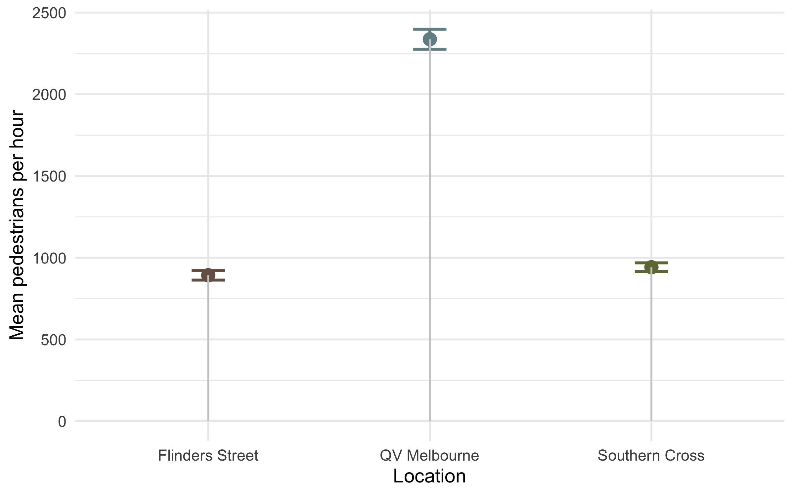
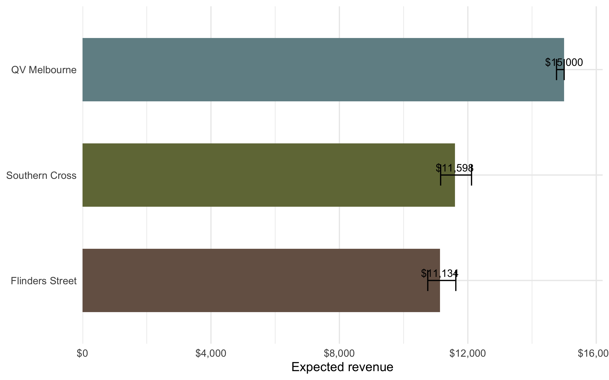

Collaboration & Original Assignment
This analysis began as a group assignment for our Statistical Thinking unit, completed together with Sia Chawla and Siddhi Jadhav.
The core data wrangling, modelling, and statistical code were developed collaboratively.
This blog post is my own adapted version for my analytics portfolio, I’ve rewritten the narrative, added explanations, and restructured the presentation for a broader readership, but the underlying work is not solely my own.
You can find the original group repository here:
👉 Original Assignment GitHub Repo: https://github.com/jyovika/Pedestrian_Crossings_Data_Analysis
Introduction
The centre of Melbourne is full of movement and energy. Every day thousands of people pass through places like Southern Cross, Flinders Street, and QV Melbourne. At first glance it feels chaotic. Underneath that movement however is a pattern. I wanted to understand those patterns and tell a story about how these three locations behave.
I approached this like a real analytics problem. Start with descriptive exploration. Fit distributions that reflect the character of each location. Estimate meaningful quantities for planning and design. Compare sites in a way that answers the practical questions that planners and marketers actually care about. By the end of the analysis, these three crossings no longer felt like random busy spots on a map. They felt like distinct personalities with their own rhythms and their own commercial and operational implications.
First Impressions Through Visuals
To get a feel for how each location behaves, I plotted boxplots and density curves. These gave a surprisingly clear first impression.

QV Melbourne clearly carries the heaviest flow. Southern Cross and Flinders Street sit closer together although Flinders has slightly lower typical values. All three distributions show right skew which tells us they have occasional high traffic bursts.
The summary statistics confirm these observations.
| Crossing | n | Mean | Median | SD | Min | Max | IQR |
|---|---|---|---|---|---|---|---|
| Southern Cross | 97 | 941.8 | 955 | 133.0 | 494 | 1256 | 143 |
| Flinders Street | 97 | 893.0 | 887 | 147.9 | 590 | 1282 | 202 |
| QV Melbourne | 97 | 2336.7 | 2310 | 304.9 | 1773 | 3122 | 462 |
At this stage it already felt like QV Melbourne was in a different league. It is not just busy. It is volatile. That volatility becomes important once we start modelling.
Choosing Statistical Models That Fit
To describe each crossing in a way that is useful for prediction and design, I fit Normal, Lognormal, and Gamma models. I did this for each site and compared the fits through likelihood values and visual diagnostics.
| Crossing | Model | Log-Likelihood | AIC | Mean Estimate | SD Estimate |
|---|---|---|---|---|---|
| Flinders Street | lognormal | -619.6 | 1243.3 | 893.0 | 146.8 |
| Flinders Street | gamma | -620.0 | 1244.0 | 893.0 | 145.7 |
| Flinders Street | normal | -621.8 | 1247.6 | 893.0 | 147.1 |
| QV Melbourne | lognormal | -690.0 | 1384.1 | 2336.6 | 301.0 |
| QV Melbourne | gamma | -690.5 | 1384.9 | 2336.7 | 300.3 |
| QV Melbourne | normal | -692.0 | 1387.9 | 2336.7 | 303.3 |
| Southern Cross | normal | -611.5 | 1227.0 | 941.8 | 132.3 |
| Southern Cross | gamma | -614.7 | 1233.4 | 941.8 | 137.7 |
| Southern Cross | lognormal | -617.0 | 1238.0 | 942.3 | 142.4 |
To validate these choices visually, I used QQ plots.

The results made sense intuitively. Southern Cross behaves in a more symmetric way so the Normal model works there. Flinders Street and QV Melbourne are right skewed so the Lognormal model captures their structure better. These choices become important later once we start estimating upper percentiles and running simulations.
Understanding the Busiest Days
Planners often care about the 90th percentile flow. It is the level of traffic that only occurs on the busiest one out of ten days. If a crossing struggles at this level it gets congested.
To estimate this level, I used both:
- direct quantiles from the sample
- bootstrap confidence intervals
- model based percentile estimates
The bootstrap method shows how the estimate varies if the data were resampled repeatedly.
| crossing | q90 |
|---|---|
| Southern Cross | 1090.0 |
| Flinders Street | 1060.8 |
| QV Melbourne | 2704.0 |
Then I used the model fits to estimate theoretical percentiles and confidence intervals.
| crossing | q90_sample | q90_sample_low | q90_sample_high | model | q90_model | q90_model_low | q90_model_high |
|---|---|---|---|---|---|---|---|
| Flinders Street | 1060.8 | 1038.6 | 1157.1 | lognormal | 1086.3 | 1030.6 | 1142.2 |
| Southern Cross | 1090.0 | 1057.2 | 1128.0 | normal | 1111.4 | 1066.2 | 1150.2 |
| QV Melbourne | 2704.0 | 2624.0 | 2939.0 | lognormal | 2731.7 | 2614.4 | 2836.3 |
The interesting part is that both approaches lined up almost perfectly. That gave confidence that the models were capturing the behaviour well. QV Melbourne showed a very high threshold, well above 2600. Southern Cross and Flinders Street sat around the 900 to 1000 mark.
Which Location Offers the Best Marketing Opportunity?
Pedestrian flow directly relates to advertising value. To compare locations fairly, I estimated the mean counts and their confidence intervals.
| Location | Mean | 95% CI (Low) | 95% CI (High) |
|---|---|---|---|
| Southern Cross | 941.8 | 915.0 | 968.6 |
| Flinders Street | 893.0 | 863.2 | 922.8 |
| QV Melbourne | 2336.7 | 2275.3 | 2398.2 |
A lollipop chart showed the contrasts clearly.

QV Melbourne stands out strongly again. It is not only busy but consistently busy. Southern Cross and Flinders Street are steady but sit at roughly half the mean of QV.
Estimating Billboard Revenue
One final practical question emerged. If a bank paid a base amount plus a bonus depending on how often a site exceeded 1000 people per hour, which crossing would earn the most?
I calculated the proportion of days above that threshold using Wilson confidence intervals.
| Crossing | n | k | Proportion >1000 | CI (Low) | CI (High) | Estimated Revenue | Revenue CI (Low) | Revenue CI (High) |
|---|---|---|---|---|---|---|---|---|
| Southern Cross | 97 | 31 | 0.3 | 0.2 | 0.4 | 11597.9 | 11153.0 | 12115.3 |
| Flinders Street | 97 | 22 | 0.2 | 0.2 | 0.3 | 11134.0 | 10752.5 | 11625.9 |
| QV Melbourne | 97 | 97 | 1.0 | 1.0 | 1.0 | 15000.0 | 14762.6 | 15000.0 |
And visualised the result.

QV Melbourne once again delivered the highest and most reliable revenue because it exceeded the threshold every single day in the dataset. Flinders Street and Southern Cross showed lower and similar values.
Final Thoughts
What started as a simple exploration turned into a deeper look at how Melbourne moves. Each crossing behaves differently and those differences matter. They influence engineering decisions, marketing opportunities, and even the reliability of revenue estimates.
Southern Cross is steady. Flinders Street is slightly lower but similar in structure. QV Melbourne is on its own path with heavy traffic and large fluctuations that give it both challenges and commercial potential. Data lets us see these places as more than busy intersections. They become systems with measurable behaviour and predictable characteristics. That is what makes this type of analysis rewarding. It connects statistical modelling to real city life.
Code and Reproducibility
Click to View Full Code and Data
Full datasets, scripts, and the original group project are available here:
- Group source code: https://github.com/jyovika/Pedestrian_Crossings_Data_Analysis
- My analytics portfolio repository: https://github.com/jyovika/jyovika-analytics-portfolio